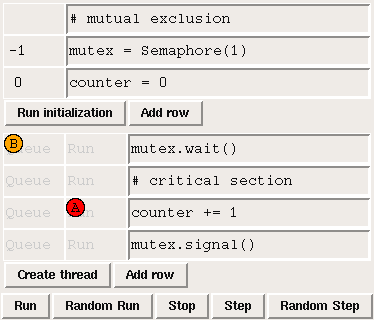
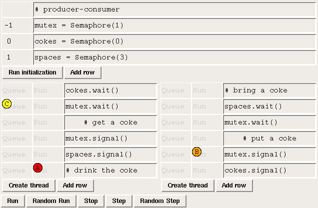

Sync
Sync is a thread simulator used in Synchronization, a two-credit (half-class) elective where students solve classical (and not-so-classical) synchronization problems using semaphores. The class follows the sequence of exercises in The Little Book of Semaphores, which is a Free Book by the author of Swampy.A semaphore is a data structure that can be shared between concurrent threads in order to enforce synchronization constraints. The most common synchronization constraint is "mutual exclusion", in which a critical section of a program is protected so that only one thread can execute it concurrently.
The following screenshot shows a Sync simulation of two threads using a semaphore to enforce exclusive access to an increment operation (which is usually not thread-safe):

The top three rows show the initialization code that creates a Semaphore object named mutex and a counter named x. The current value of mutex is -1, which indicates that there is one thread in queue waiting for this semaphore.
The next four rows show the code the threads are executing. In order to enter the critical section, each thread executes mutex.wait. After executing the critical section the threads execute mutex.signal to indicate that the critical section is free.
The threads are represented by colored, lettered circles. Thread A is in the critical section; it is just about to execute x=x+1. Thread B has just executed mutex.wait, but because the critical section is occupied, Thread B has been moved into the queue. When Thread A executes mutex.signal, Thread B will be moved back into the Run column and allowed to proceed.
At the beginning of the semester, students work through a series of classical synchronization problems. For example, this screenshot shows a solution to the producer-consumer problem (in this case the "buffer" is a coke machine with a capacity of three cokes).

The code in these examples is "live" in the sense that students can modify it at any time (even while the simulator is running). The "Random Run" button simulates a non-deterministic scheduler that chooses a runnable thread at random. Students can also click on the thread markers to generate a arbitrary schedule.
In most computer science curricula, synchronization is a module in an Operating Systems class. OS textbooks present a standard set of problems with a standard set of solutions, but most students don't get a good understanding of the material or the ability to solve similar problems.
The goal of Sync is to give students a model of execution for multithreaded programs and an environment for testing solutions. By the end of the semester, students are able to solve the most difficult synchronization problems; they can also formulate new problems based on real-world synchronizations constraints. Students contributed several of the problems in The Little Book of Semaphores, including the Dining Hall Problem and the Faneuil Hall problem.